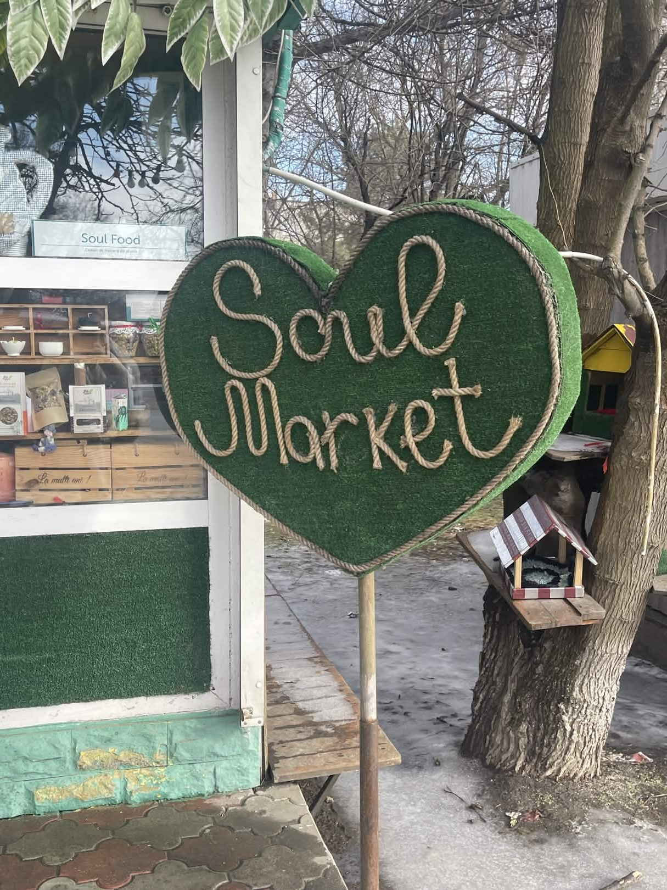
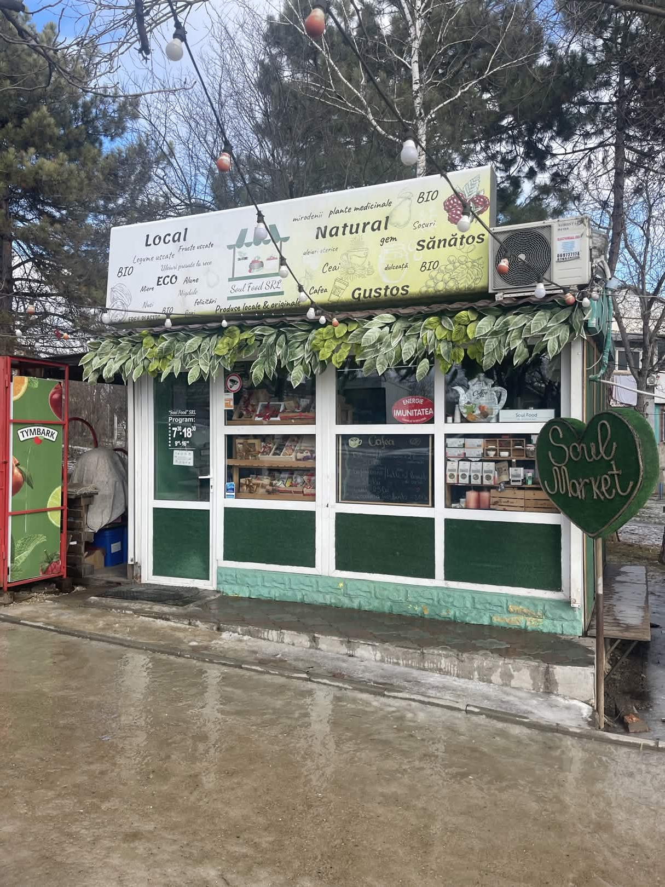
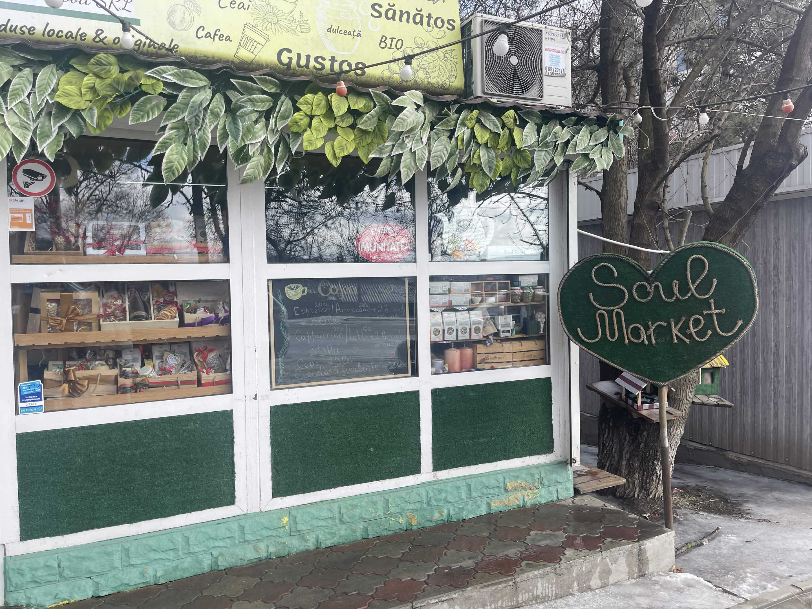

Soul Market este o mică afacere autohtonă din orașul Soarelui — Ialoveni.
Caracterizat de contrasul rural in comparație cu restul orașului, Soul Market nu vinde doar cafea, dar și ierburi naturale importate din alte țări, ceaiuri, seturi-cadou, miere naturală de albine, și nu în ultimul rând, o experiență unică și frumoasă de fiecare dată când intri în local. Băncile de afară și locul de joacă din apropiere sunt parte din o atmosferă perfectă pentru copii, și prin urmare, restul familiilor.



